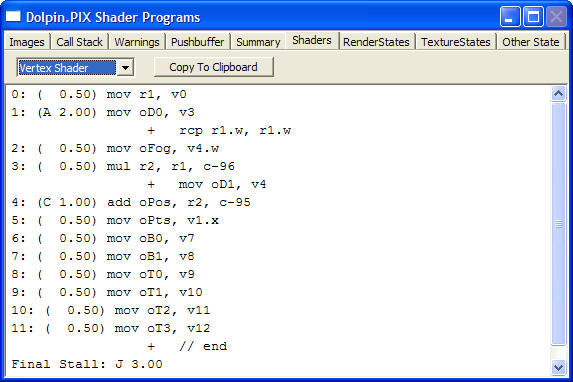
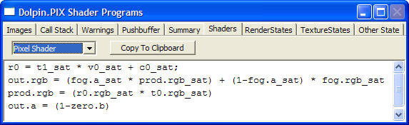

The Shaders window shows a disassembled view of the current pixel and vertex shaders. The user can choose which shader to view by selecting Pixel Shader or Vertex Shader from the drop-down list in the upper-left corner.

After each line number, inside the parentheses, the disassembled vertex shader shows the number of cycles for each instruction. Some of the cycle counts are accompanied by a letter key indicating a stall. The table below describes each stall type:
| Stall Key | Description |
|---|---|
| empty | No stall |
| A | Register initialization (first two instructions only) |
| B | Bypass (no stall) |
| C | Standard stall |
| D | Shadow-stall from using a register two instructions after it stalled |
| E | Standard stall plus shadow-stall from using a register the instruction after it stalled |
| F | Bypass plus shadow-stall from using a register the instruction after it stalled |
| G | Stall from stalling immediately after using a bypass |
| H | Stall from using a0.x the instruction after writing to it |
| I | Stall from using a0.x the instruction after writing to it stalled |
| J | Writing to X output registers causes a shader to take X cycles to execute |
| K | 18-cycle stall for using xvsw or xvss |
| L | Stall for shaders smaller than 2.5 cycles |

The disassembled pixel shader program shows what was written to r0, prod.rgb (the final combiner product register), out.rgb, and out.a (the emitted color and alpha from the final combiner state).